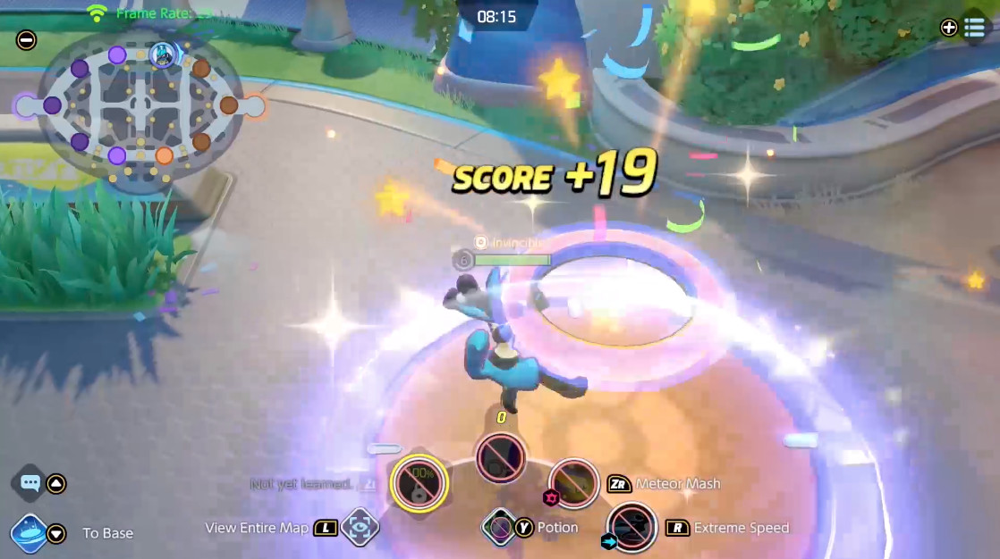
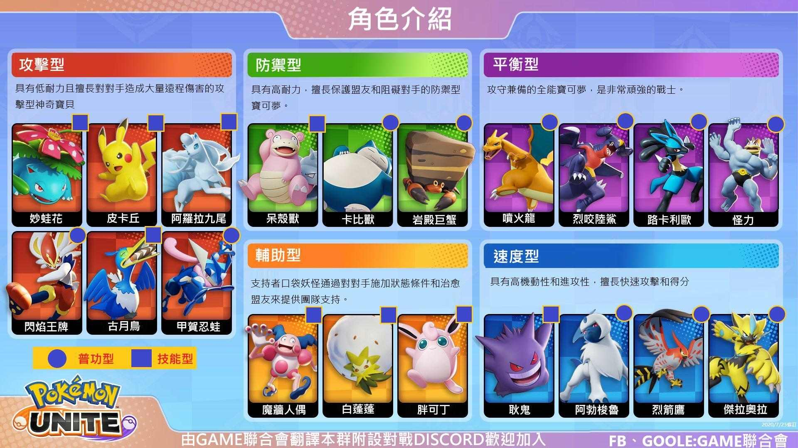
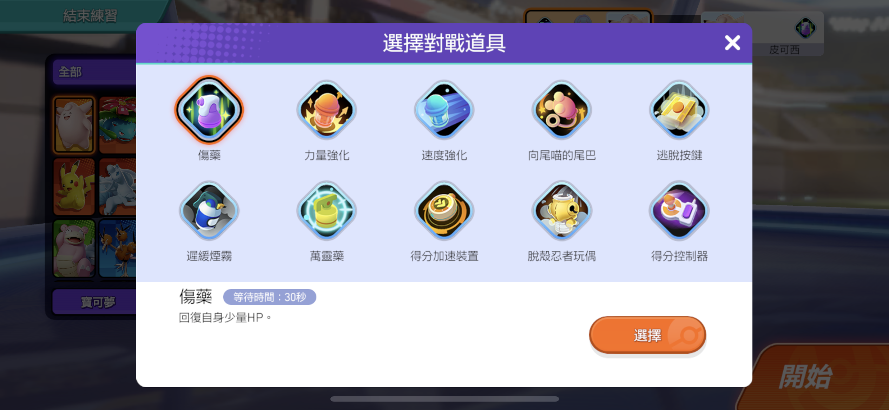

遊戲採用5V5的對戰形式，玩家操作所選寶可夢，在限制
時間內（標準對戰為10分鐘）於地圖中擊敗野生寶可夢等方式獲取積分，
並帶進對手陣營的得分區即可為隊伍增加分數。遊戲結束時，得分較高的一方獲勝。

玩家可操控的寶可夢
遊戲將玩家可操控的寶可夢分為攻擊型、防禦型、敏捷型、平衡型和輔助型五大類。此外，根據攻擊方式的不同，還分為近距離和遠距離兩類。

持有物
在遊戲中，每個玩家在一局遊戲裡可攜帶三個持有物，若搭配得宜，可以為自己帶來一定的優勢。
道具
提升訓練家等級可獲得「對戰道具」。這些道具能為自己的寶可夢提供輔助。一場比賽裡只能使用1種對戰道具，所以挑選時要仔細考慮。
